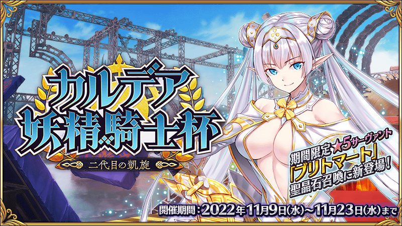
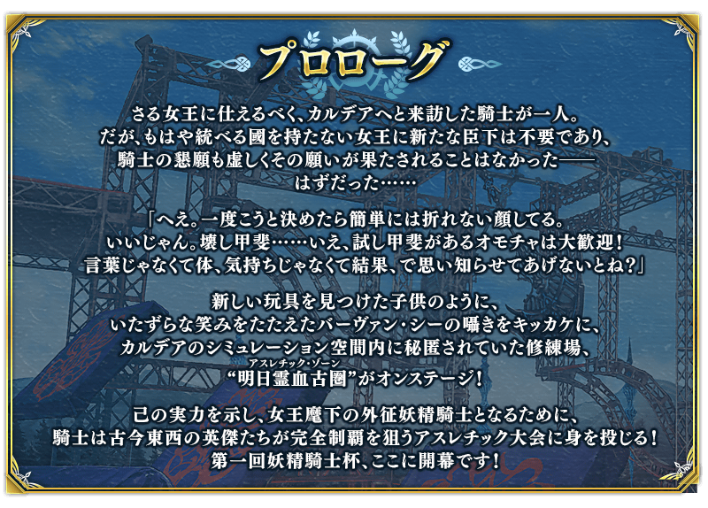
期間限定活動「迦勒底妖精騎士杯 ～第二代的凱旋～」開幕！
集結迦勒底三師匠與妖精中菁英的一大明日靈血古(Athletic)在迦勒底登場！
目標是比並列的英靈們的任何人都還要快完全制霸這必定淘汰的凶惡明日靈血古！
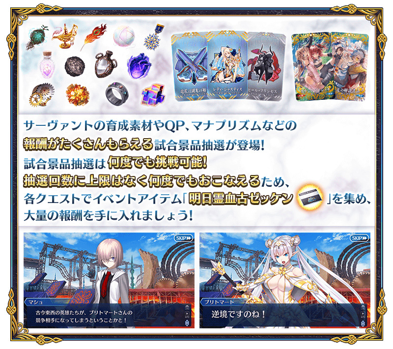
◆活動舉辦期間◆
2022年11月9日(三) 19:00～11月23日(三) 11:59
◆活動參加條件◆
・通過第2部 第6章「Lostbelt No.6 妖精圓卓領域 阿瓦隆・勒菲 星辰誕生之刻」
※不需要通過亞種特異點(從Ⅰ到Ⅳ)。
◆關於活動一部份內容的參加條件放寬◆
※本活動的參加條件為通過第2部 第6章「Lostbelt No.6 妖精圓卓領域 阿瓦隆・勒菲 星辰誕生之刻」，通過「特異點F 炎上汙染都市 冬木」後，變得能遊玩活動主線關卡以外的關卡。
※未通過第2部 第6章「Lostbelt No.6 妖精圓卓領域 阿瓦隆・勒菲 星辰誕生之刻」的情況，無法遊玩本活動的主線關卡，敬請注意。
※本頁面皆為開發中圖片。會有與實際圖片相異的情況。 ※一部份的關卡為日後開放。
活動的遊玩方式
期間限定活動「迦勒底妖精騎士杯 ～第二代的凱旋～」中中，會出現定期變換關卡內容的自由關卡、逐日開放的展演關卡。
自由關卡中能獲得各種活動道具，展演關卡則能獲得豪華報酬做為通過報酬。
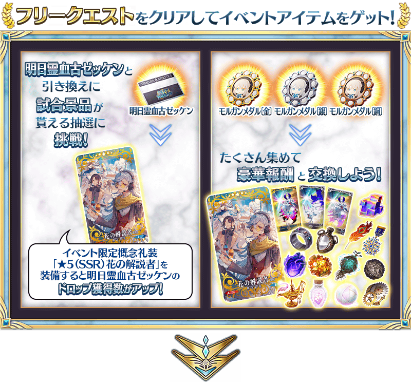 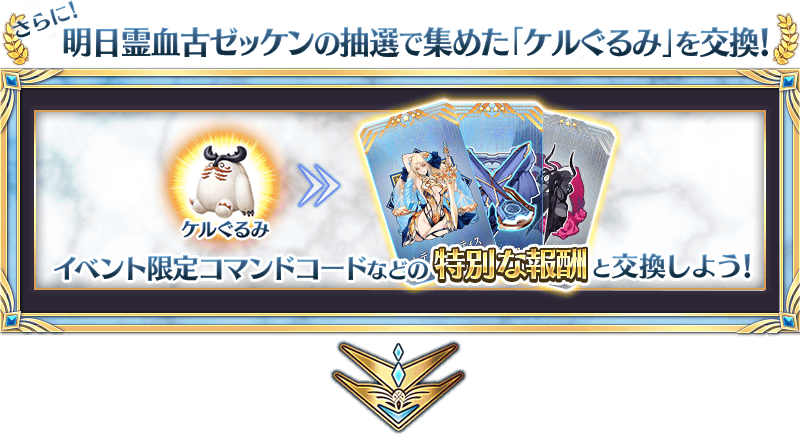 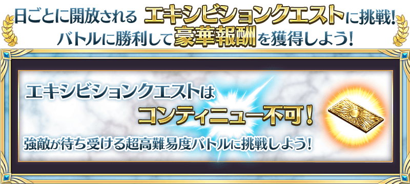
活動期間中，會出現複數從者登場的自由關卡。
自由關卡有7階段的難易度，各自登場的從者和報酬等有所變化。
另外，透過時間表的進行，關卡的種類會從「第壹關門」變化，因此關卡內容也會變化。
請注意每個關卡有各自的舉辦期間，超過後就算是活動舉辦中也無法挑戰。
◆自由關卡舉辦期間◆
| 關卡的種類 | 舉辦期間 |
|---|---|
| 第壹關門 | 2022年11月9日(三) 19:00～11月12日(六) 16:59 |
| 第貳關門 | 2022年11月12日(六) 17:00～11月16日(三) 16:59 |
| 第參關門 | 2022年11月16日(三) 17:00～11月23日(三) 11:59 |
◆關於活動自由關卡的開放◆
・有通過本活動參加條件的第2部 第6章「Lostbelt No.6 妖精圓卓領域 阿瓦隆・勒菲 星辰誕生之刻」的情況，透過進行主線關卡會開放自由關卡。 ・未通過第2部 第6章「Lostbelt No.6 妖精圓卓領域 阿瓦隆・勒菲 星辰誕生之刻」且有通過「特異點F 炎上汙染都市 冬木」的情況，會在通過「特異點F 炎上汙染都市 冬木」的時間點變成開放自由關卡的狀態。

| 關卡 | 推薦Lv. | 消耗AP |
|---|---|---|
| 第壹關門 アサシンステップス | 25 | 30 |
| 第壹關門 ホエールボーン | 40 | 35 |
| 第壹關門 ビートザオーガ | 60 | 40 |
| 第壹關門 そびえ立つ壁 | 80 | |
| 第壹關門 タランチュラウォーク | 90 | |
| 第壹關門 エッグファイト | 90+ | |
| 第壹關門 ミミクリーパラダイス | 90++ |
附加無法接關限制挑戰的超高難易度關卡會有使用特殊技能等與平常不同攻擊方式的敵人。
通過關卡的話可得到呼符等的豪華報酬。
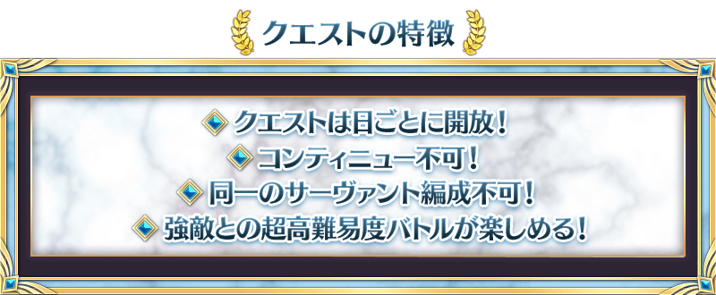
※就算是同名的從者只要稀有度或職階相異的情況和在名稱附有〔Alter〕等的情況即可編制。 ※展演關卡就算在通過後也不會消失，能挑戰無數次。 ※關卡通過報酬、戰利品、御主EXP、魔術禮裝EXP、絆點數只可在初次通過時獲得。
| 關卡 | 舉辦期間 |
|---|---|
| 【超高難易度】展演關卡1 |
2022年11月9日(三) 19:00～ 11月23日(三) 11:59 |
| 【超高難易度】展演關卡2 |
2022年11月10日(四) 17:00～ 11月23日(三) 11:59 |
| 【超高難易度】展演關卡3 |
2022年11月11日(五) 17:00～ 11月23日(三) 11:59 |
| 【超高難易度】展演關卡4 |
2022年11月12日(六) 17:00～ 11月23日(三) 11:59 |
| 【超高難易度】展演關卡5 |
2022年11月13日(日) 17:00～ 11月23日(三) 11:59 |
| 【超高難易度】展演關卡6 |
2022年11月14日(一) 17:00～ 11月23日(三) 11:59 |
| 【超高難易度】展演關卡 終演 |
2022年11月16日(三) 17:00～ 11月23日(三) 11:59 |
在活動關卡收集「明日靈血古號碼布」，交換比賽獎品吧！
會透過抽選進行比賽獎品的交換。
獎品陣容會各放入1個「大獎」。
抽到大獎，點擊「比賽獎品更新」的話，會補充新的大獎，切換到下個陣容。
另外，抽到所有比賽獎品後，會自動補充新的比賽獎品，切換到下個陣容。
放入「大獎」的陣容有10次份！
獲得「大獎」，注目的禮物都沒了的話，就點擊「比賽獎品更新」來補充「大獎」吧！
※比賽獎品抽選的第1次～第10次，抽到「大獎」會顯示「比賽獎品更新」。 ※第11次以後，不會顯示「比賽獎品更新」，而是在所有比賽獎品都沒了時自動切換到下個陣容。 ※第11次以後，不會更新「大獎」及「黃金果實」「白銀果實」。 ※收集在比賽獎品陣容中有的活動道具「科爾玩偶」可交換活動限定指令紋章等特別的報酬。 ※在交換期間結束後「明日靈血古號碼布」會消失。
◆明日靈血古號碼布交換期間◆
2022年11月9日(三) 19:00～11月30日(三) 11:59
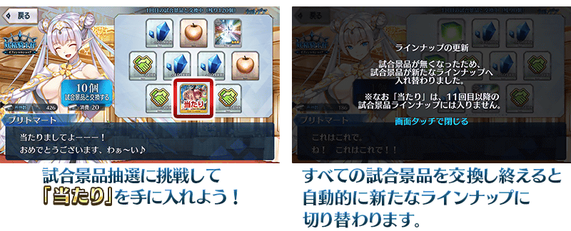
第11次以後1次最多能交換100個
放入「大獎」的第10次以前陣容的比賽獎品交換完後，從第11次以後的陣容，1次最多可交換100個比賽獎品。
※「明日靈血古號碼布」沒到可交換100個的情況。屆時可給予最大數為止的比賽獎品。
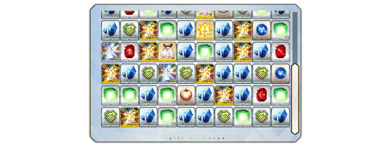
◆比賽獎品陣容◆
【大獎】
| 陣容次數 | 大獎 | ||
|---|---|---|---|
| 1～第5次 | 活動限定概念禮裝★5(SSR)「カウント・ストレッチ」 | ||
| 第6次 |

|
傳承結晶 | |
| 7～第10次 |

|
英靈結晶・流星之芙芙ALL★4(HP) | |
【比賽獎品】
| 種類 | 比賽獎品 | ||
|---|---|---|---|
| 活動道具 | 科爾玩偶 | ||
| 技能強化＆靈基再臨素材 |
極光之鋼 人工生命體幼體 萬死的毒針 英雄之證 宵泣之鐵樁 |
||
| 技能強化素材 |
劍之秘石 弓之秘石 槍之秘石 騎之秘石 術之秘石 殺之秘石 狂之秘石 劍之魔石 弓之魔石 槍之魔石 騎之魔石 術之魔石 殺之魔石 狂之魔石 劍之輝石 弓之輝石 槍之輝石 騎之輝石 術之輝石 殺之輝石 狂之輝石 |
||
| 其他道具 |
睿智的猛火ALL★4(SR) 睿智的大火ALL★3(R) 黃金果實 ※第10次為止 白銀果實 ※第10次為止 赤銅果實 魔力稜鏡 QP 友情點數 |
||
裝備活動限定概念禮裝與期間限定概念禮裝的話，在活動中會受到各式各樣的恩惠。
裝備可靠比賽獎品抽選入手的活動限定概念禮裝「★5(SSR)カウント・ストレッチ」的話，在期間限定活動「迦勒底妖精騎士杯 ～第二代的凱旋～」中自身的攻擊威力會提升。
另外，裝備可靠活動道具交換入手的活動限定概念禮裝「★5(SSR)花の解説者」的話，活動道具「明日靈血古號碼布」的掉落獲得數會提升！
另外，裝備在聖晶石召喚Pick Up的期間限定概念禮裝「★5(SSR)エイペックス」「★4(SR)ロード・トゥ・星星」「★3(R)マッスル・バレット」的話，活動道具「摩根獎章〔金〕」「摩根獎章〔銀〕」「摩根獎章〔銅〕」各自的掉落獲得數會提升。
※請注意各關卡的道具掉落率並非100％。
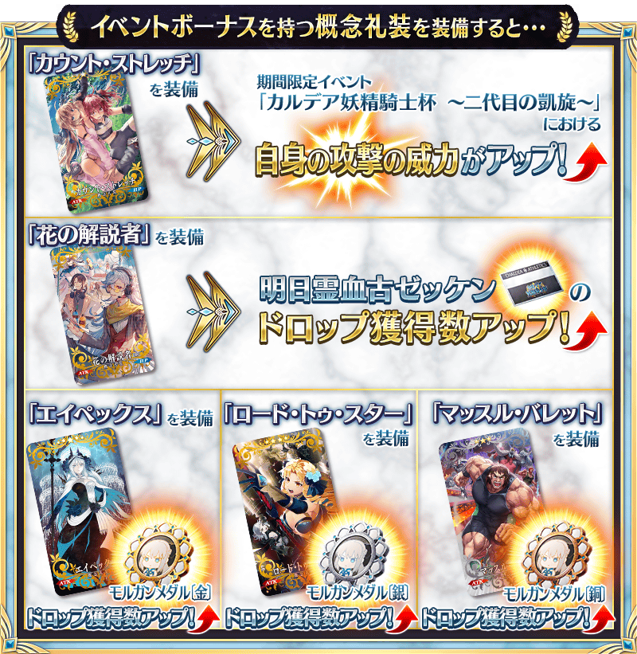
| 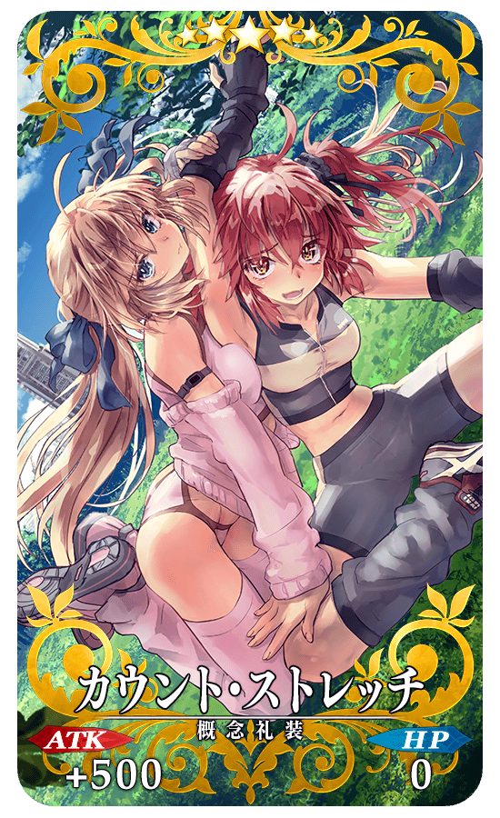 |
★★★★★SSR
◆最大解放時效果◆
|
| 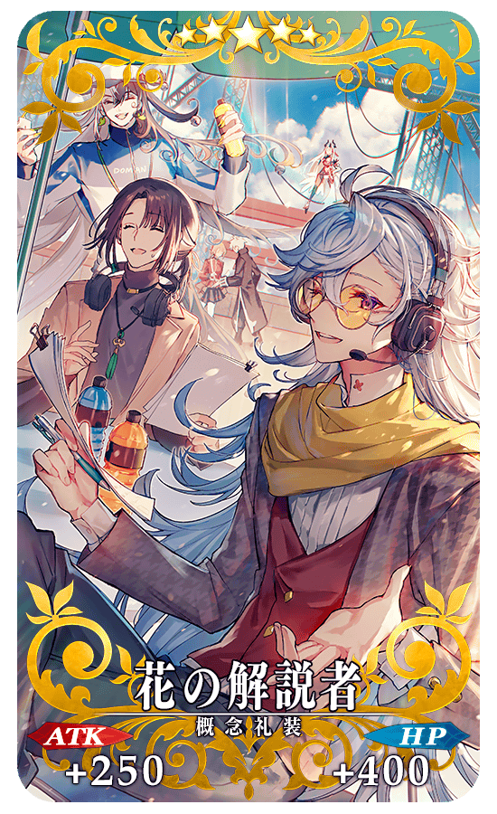 |
★★★★★SSR
◆最大解放時效果◆
|
| 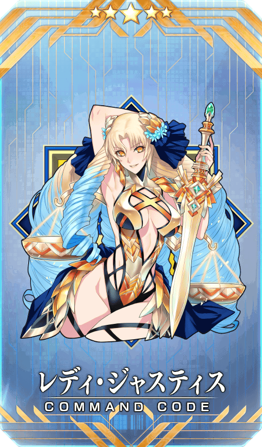 |
【活動限定】 |
| 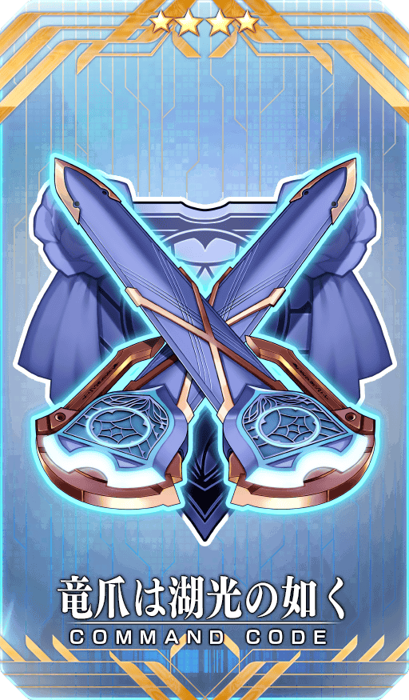 |
★★★★SR |

|
★★★R |
活動道具可自點擊管理室(ターミナル)畫面右上「活動報酬」鍵所顯示的「活動道具交換」畫面，交換以下的道具。
※活動道具交換期間結束後「科爾玩偶」「摩根獎章〔金〕」「摩根獎章〔銀〕」「摩根獎章〔銅〕」會消失。
◆交換期間◆
2022年11月9日(三) 19:00～11月30日(三) 11:59
◆能用科爾玩偶交換的道具◆
|
【活動報酬指令紋章】 【技能強化＆靈基再臨素材】 【其他道具】 |
◆能用摩根獎章〔金〕交換的道具◆
|
【活動限定概念禮裝】 【技能強化＆靈基再臨素材】 【靈基再臨素材】 【其他道具】 |
◆能用摩根獎章〔銀〕交換的道具◆
|
【活動限定概念禮裝】 【技能強化＆靈基再臨素材】 【靈基再臨素材】 【其他道具】 |
◆能用摩根獎章〔銅〕交換的道具◆
|
【活動限定概念禮裝】 【技能強化＆靈基再臨素材】 【其他道具】 |
在期間限定活動「迦勒底妖精騎士杯 ～第二代的凱旋～」的特設頁面，智慧型手機用桌面的贈送實施中！
在社群媒體分享特設頁面就能下載，請務必使用。
◆配發期間◆
2022年11月9日(三) 19:00～11月23日(三) 11:59
◆特設頁面◆
https://www.fate-go.jp/special/2022-faerie_knight_cup//
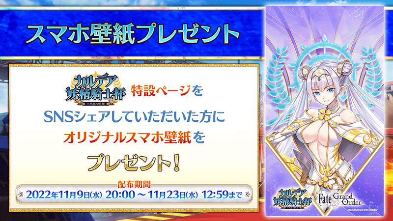
其他還有，「迦勒底妖精騎士杯 布里托瑪Pick Up召喚」以期間限定同時舉辦！
關於詳情，請自下述橫幅確認。
■「迦勒底妖精騎士杯 布里托瑪Pick Up召喚」詳細情報